Closures and Iterators
functions that carry their world, and pipelines that run one item at a time.
A function that remembers
Two ideas meet in this episode, and they fit together better than you'd expect. Start with the first one. Here's a value, and here's a tiny function that uses it.
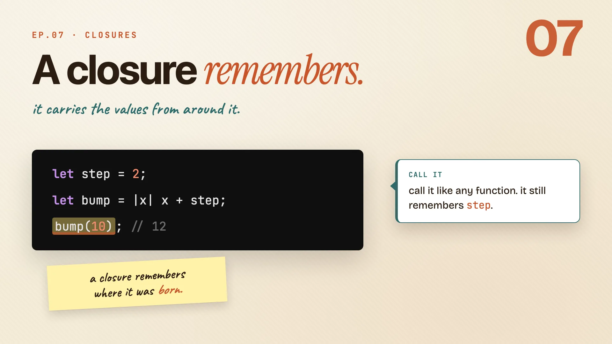
let step = 2;
let bump = |x| x + step;
bump(10); // 12
Look closely at bump:
- It never declared
step. It reached out and grabbed it from the scope around it. - You can call it like any other function,
bump(10), and it still remembersstep. - A regular
fncan't do that. A plain function only sees its own parameters, nothing from the code around it.
That little function carrying a value with it is a closure. The pipes |x| hold its parameters, and everything else it needs, it captures from where it was written.
Remember: a closure remembers where it was born.
Closures
Book · §13.1First half: closures. They're functions you write inline, with one superpower a normal fn doesn't have. They carry values from the scope around them.
From function to closure
You already know functions. They need a name, parameter types, a return type. The whole ceremony. A closure is the same logic with most of that ceremony dropped.
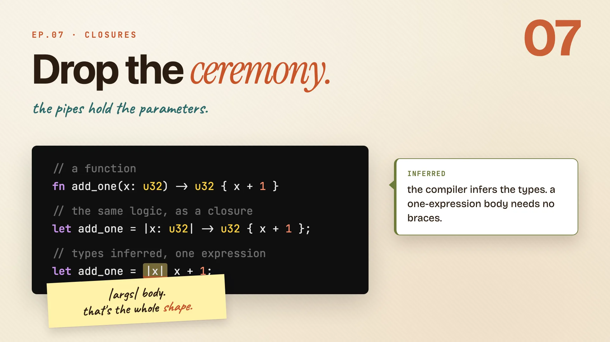
// a function
fn add_one(x: u32) -> u32 { x + 1 }
// the same logic, as a closure
let add_one = |x: u32| -> u32 { x + 1 };
// types inferred, one expression
let add_one = |x| x + 1;
Walk down the three forms:
- The function spells everything out:
fn, a name, the types, the braces. - The annotated closure swaps
fn name(...)for pipes|...|. Same types, same body. - The inferred closure is the shape you'll actually write. The compiler infers the types, and a one-expression body needs no braces.
| Piece | a function | a closure |
|---|---|---|
| a name | required (add_one) |
none, it's just a value |
| parameter types | required | optional, inferred |
| return type | required | optional, inferred |
| body braces | always | only past one expression |
| sees outer variables | no | yes |
Remember: |args| body. that's the whole shape.
Three ways to capture
When a closure uses an outside value, it captures it. There are three ways to do that, and you don't pick them by hand. How you use the value decides which one you get.
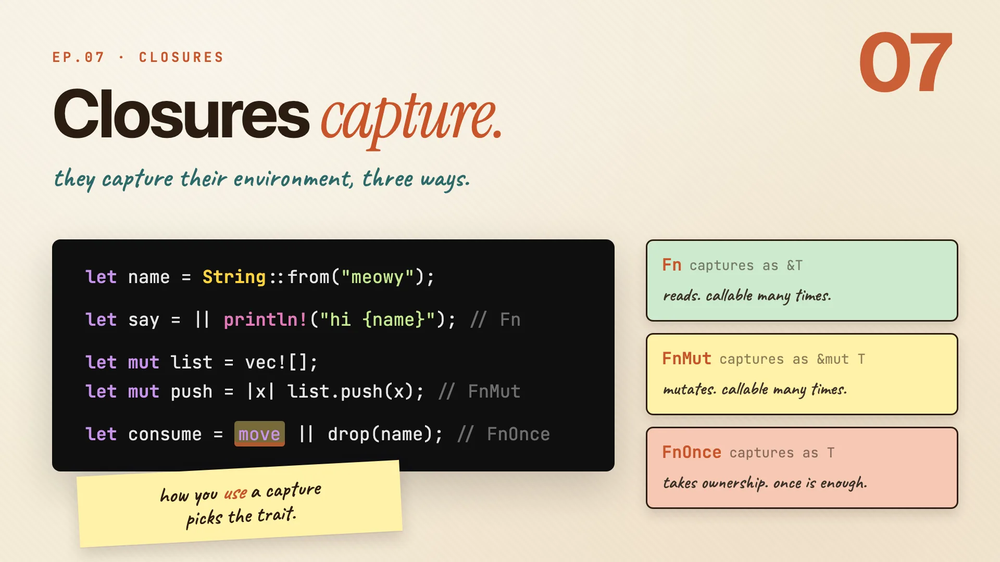
let name = String::from("meowy");
let say = || println!("hi {name}"); // Fn
let mut list = vec![];
let mut push = |x| list.push(x); // FnMut
let consume = move || drop(name); // FnOnce
Three closures, three relationships with what they captured:
sayonly readsname, so it borrows it shared. You can call it as many times as you like.pushchangeslist, so it borrows mutably. Still callable many times, but now it can mutate.consumetakesnamewhole withmove. It owns it now, so it can only run once.
| Closure | Captures as | Trait | Callable |
|---|---|---|---|
say (reads) |
&T, shared borrow |
Fn |
many times |
push (mutates) |
&mut T, mutable borrow |
FnMut |
many times |
consume (move) |
T, owned |
FnOnce |
once |
Remember: how you use a capture picks the trait.
Fn, FnMut, FnOnce
Remember traits from last episode? Fn, FnMut, and FnOnce are three of them, and they describe exactly what a closure is allowed to do with its captures.
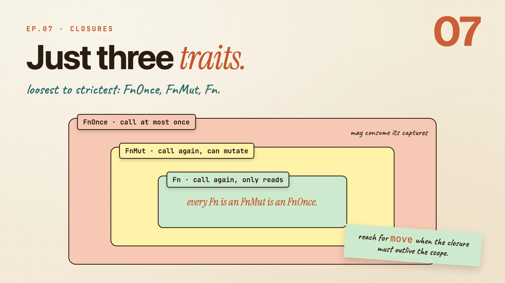
They nest, loosest on the outside to strictest on the inside:
FnOnceis the loosest. You can call it at least once, and it may consume its captures.FnMutadds calling again, with mutation allowed.Fnis the strictest. Call it again and again, but it only reads.
| Trait | What it promises | Call again? |
|---|---|---|
FnOnce |
callable at least once, may consume captures | maybe not |
FnMut |
callable again, may mutate captures | yes |
Fn |
callable again, only reads | yes |
Because each ring sits inside the next, every Fn is also an FnMut is also an FnOnce. So when a function asks for Fn, it's asking for the most flexible kind. And reach for move when a closure has to outlive the scope it was born in (a thread, for instance, which is a story for later).
Remember: every fn is an fnmut is an fnonce.
Iterators
Book · §13.2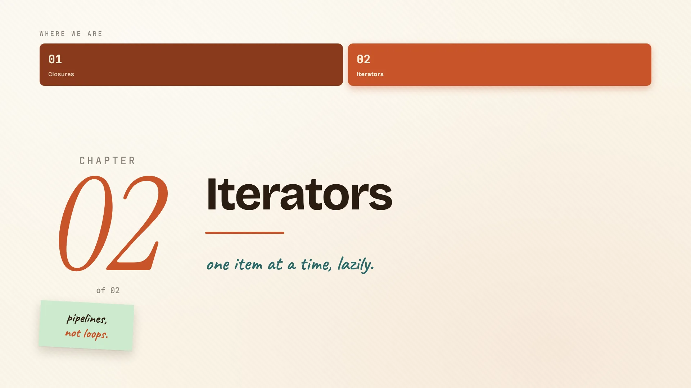
Second half: iterators. One item at a time, lazy by default, and built on the same three modes you just learned. The fun part of the episode starts here.
An iterator is one method
"Iterator" sounds fancy, but it's really one method: next. It hands back the next item, or None when it's done. That's the whole contract.
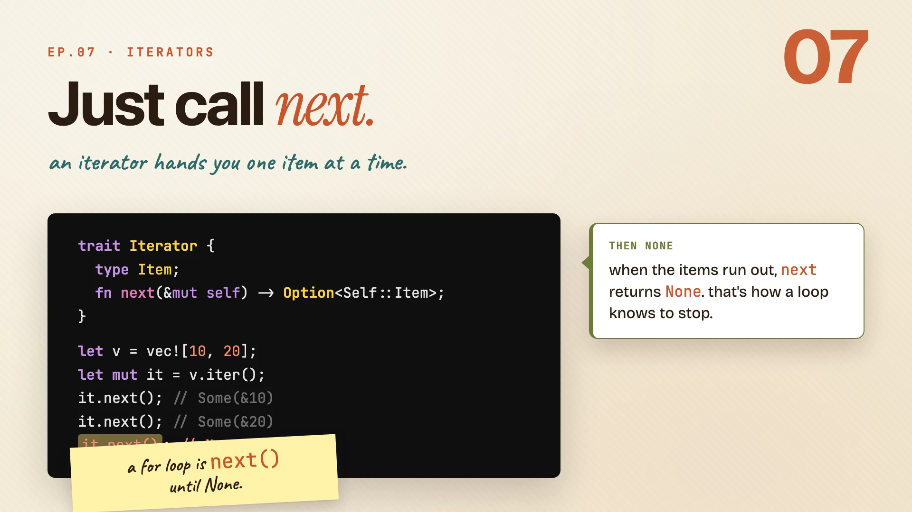
trait Iterator {
type Item;
fn next(&mut self) -> Option<Self::Item>;
}
let v = vec![10, 20];
let mut it = v.iter();
it.next(); // Some(&10)
it.next(); // Some(&20)
it.next(); // None
Call iter() to get one, then call next yourself:
- First call hands back
Some(&10). One item, wrapped inSome. - Next call hands back
Some(&20). One more. - When the items run out,
nextreturnsNone.
That None is exactly how a for loop knows when to stop. A for loop is this, calling next over and over until it sees None, done for you automatically.
Remember: a for loop is next() until none.
iter, iter_mut, into_iter
You get an iterator three ways, and they should feel familiar. They're the same borrow, mutate, take split you just saw in closures.
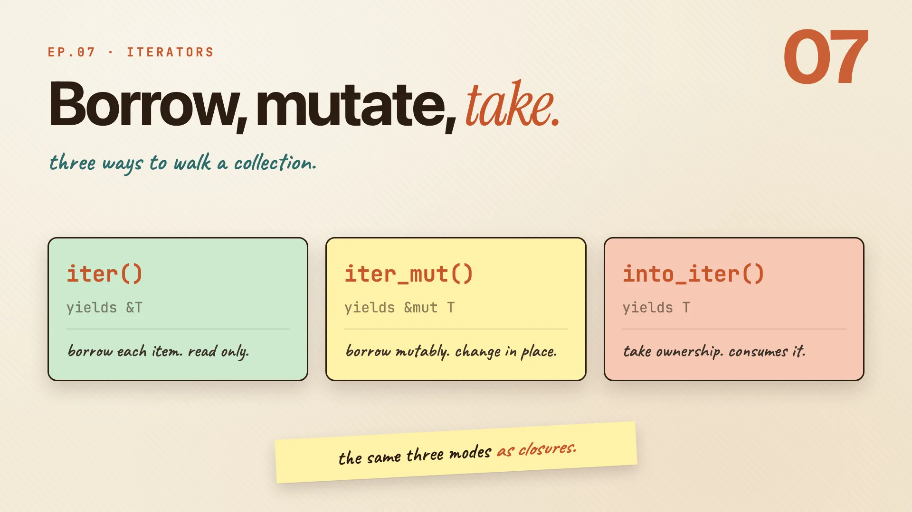
iter()borrows each item to read. Yields&T.iter_mut()borrows mutably, so you can change items in place. Yields&mut T.into_iter()takes ownership, consuming the whole collection. YieldsT.
| Method | Yields | Mode | Closure cousin |
|---|---|---|---|
iter() |
&T |
borrow, read only | Fn |
iter_mut() |
&mut T |
mutable borrow | FnMut |
into_iter() |
T |
takes ownership | FnOnce |
Borrow, mutate, take. The exact same three modes as closures, learned once and reused.
Remember: the same three modes as closures.
Adapters take closures
Here's where both halves of the episode meet. Adapters are iterator methods that take a closure, so everything you learned about closures pays off again.
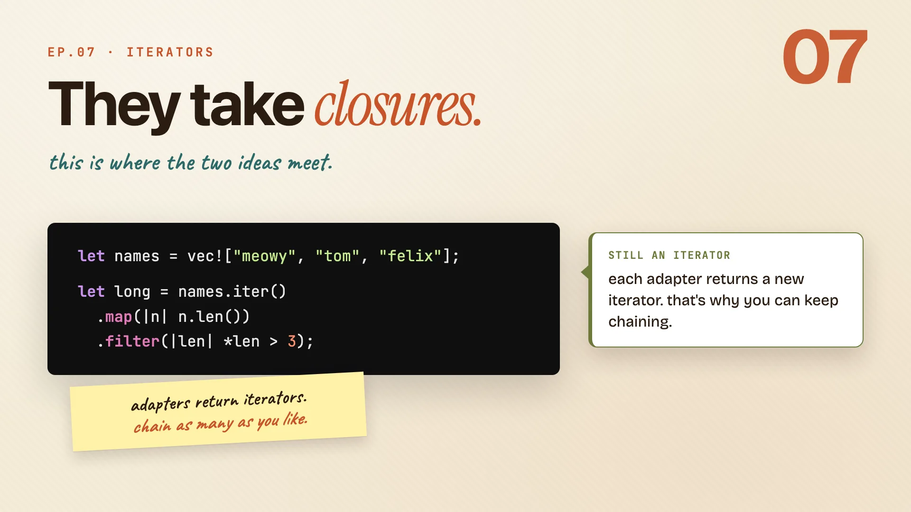
let names = vec!["meowy", "tom", "felix"];
let long = names.iter()
.map(|n| n.len())
.filter(|len| *len > 3);
mapruns your closure on every item. A name goes in, its length comes out.filterkeeps an item only when your closure returnstrue. So here, only the longer names survive.- The trick: each adapter returns another iterator. That's why you can keep chaining them, one after another.
| Adapter | Takes | Does | Returns |
|---|---|---|---|
map |
a closure | transforms each item | a new iterator |
filter |
a closure to bool |
keeps items that pass | a new iterator |
Remember: adapters return iterators. chain as many as you like.
Iterators are lazy
Here's the part that trips people up. Iterators are lazy. Building a chain doesn't run anything. Nothing happens until something asks.
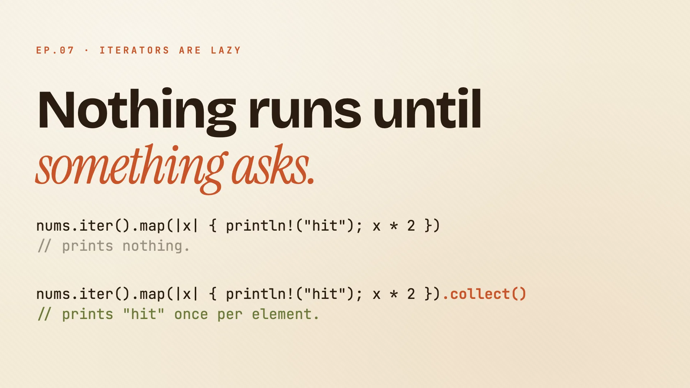
nums.iter().map(|x| { println!("hit"); x * 2 });
// prints nothing
nums.iter().map(|x| { println!("hit"); x * 2 }).collect();
// prints "hit" once per element
- The first line builds a
map, then drops it. It prints nothing. Not onehit. The closure never even runs. - The second line adds
.collect(), and suddenly it runs, once per element.
collect is the thing that asks. Adapters just describe work. A consumer like collect is what finally pulls the values through.
Remember: nothing runs until a consumer asks.
A real pipeline
Now put it together. Start with six numbers, keep the even ones, double each, and gather the result. One readable chain.
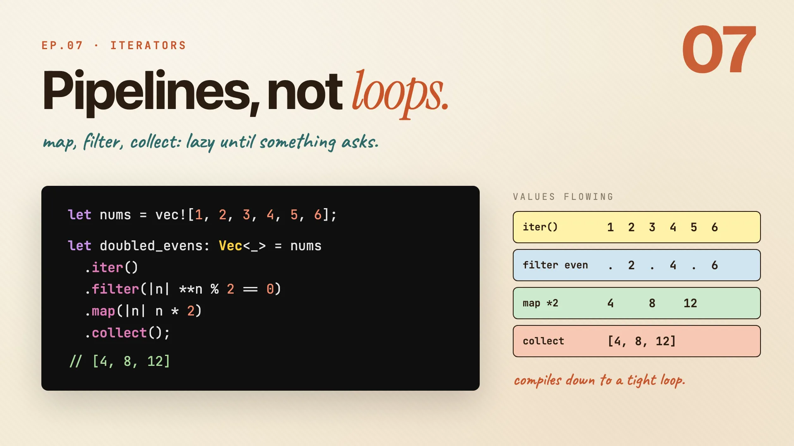
let nums = vec![1, 2, 3, 4, 5, 6];
let doubled_evens: Vec<_> = nums
.iter()
.filter(|n| **n % 2 == 0)
.map(|n| n * 2)
.collect();
// [4, 8, 12]
Trace the values flowing through, one step at a time:
| Step | Values |
|---|---|
iter() |
1 2 3 4 5 6 |
filter even |
2 4 6 |
map *2 |
4 8 12 |
collect |
[4, 8, 12] |
collect is what finally asks. It pulls everything through and gathers it into a Vec. And here's the kicker: this whole chain compiles down to one tight loop. No intermediate vectors, no wasted passes.
Remember: describe the pipeline. rust runs it as one tight loop.
Consumers end the chain
So what actually asks? A consumer. It's the method at the end that pulls every value through and hands you back a result.
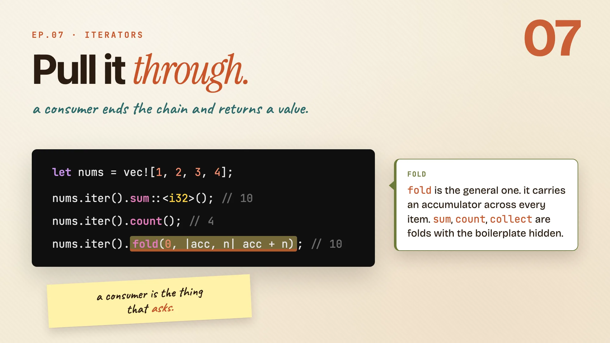
let nums = vec![1, 2, 3, 4];
nums.iter().sum::<i32>(); // 10
nums.iter().count(); // 4
nums.iter().fold(0, |acc, n| acc + n); // 10
sumpulls every value through and adds them up. Now the pipeline really runs.countwalks the whole thing and tells you how many came out.foldis the general one. It carries an accumulator across every item, and you decide what to do at each step.
| Consumer | Does | On [1, 2, 3, 4] |
|---|---|---|
sum |
adds everything up | 10 |
count |
counts the items | 4 |
fold |
accumulates, your rule per step | 10 |
In fact sum, count, even collect are all fold with the boilerplate hidden. Learn fold and you understand the rest.
Remember: a consumer is the thing that asks.
Zero-cost abstractions
You might worry all this chaining is slow. It isn't. Here's what you write, and here's what the compiler turns it into.
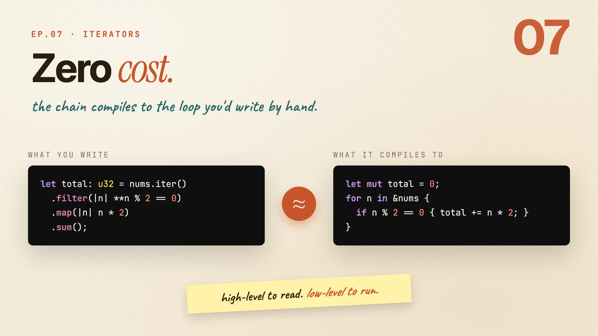
// what you write
let total: u32 = nums.iter()
.filter(|n| **n % 2 == 0)
.map(|n| n * 2)
.sum();
// what it compiles to
let mut total = 0;
for n in &nums {
if n % 2 == 0 { total += n * 2; }
}
Same machine code. No extra cost for the nice syntax.
| what you write | what it compiles to | |
|---|---|---|
| shape | a chain of adapters | a plain for loop |
| reads like | a description of the result | low-level steps |
| runs like | the hand-written loop | the exact same loop |
This is what people mean by a zero-cost abstraction. You pay nothing at runtime for writing the readable version.
Remember: high-level to read. low-level to run.
The whole second half in one line. Lazy, chained, fast.
Iterators are the killer feature: you describe what you want, and Rust runs it fast.
Cheatsheet recap
One line per idea, in order. Skim this when you just need the reminder.
| Idea | Remember |
|---|---|
| A function that remembers | a closure remembers where it was born. |
| From function to closure | |args| body. that's the whole shape. |
| Three ways to capture | how you use a capture picks the trait. |
| Fn, FnMut, FnOnce | every fn is an fnmut is an fnonce. |
| An iterator is one method | a for loop is next() until none. |
| iter, iter_mut, into_iter | the same three modes as closures. |
| Adapters take closures | adapters return iterators. chain as many as you like. |
| Iterators are lazy | nothing runs until a consumer asks. |
| A real pipeline | describe the pipeline. rust runs it as one tight loop. |
| Consumers end the chain | a consumer is the thing that asks. |
| Zero-cost abstractions | high-level to read. low-level to run. |
Practice: Rustlings
18_iterators.